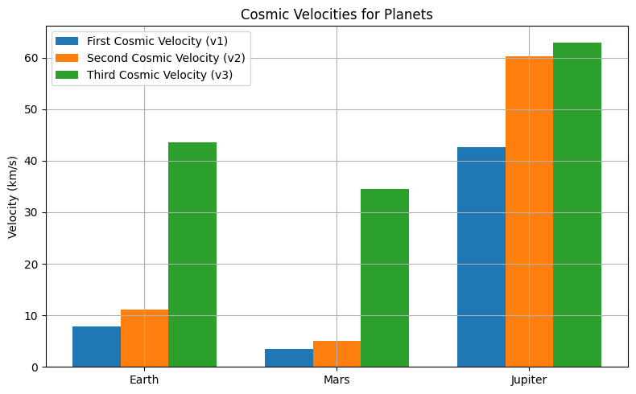
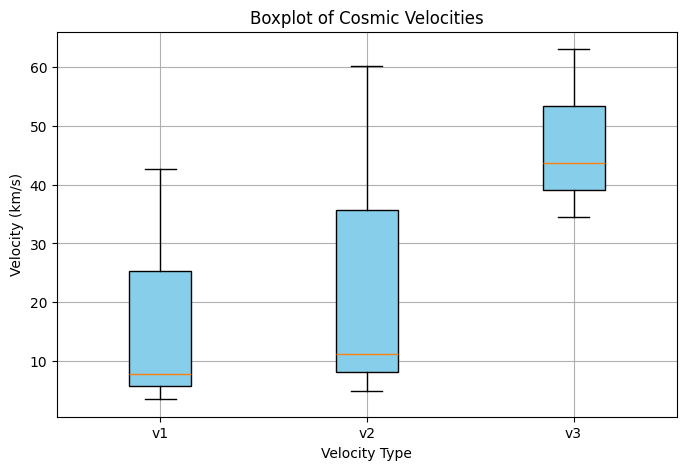
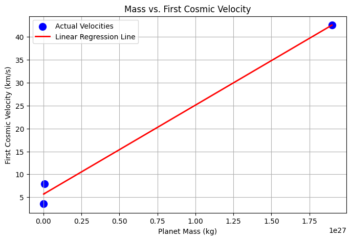
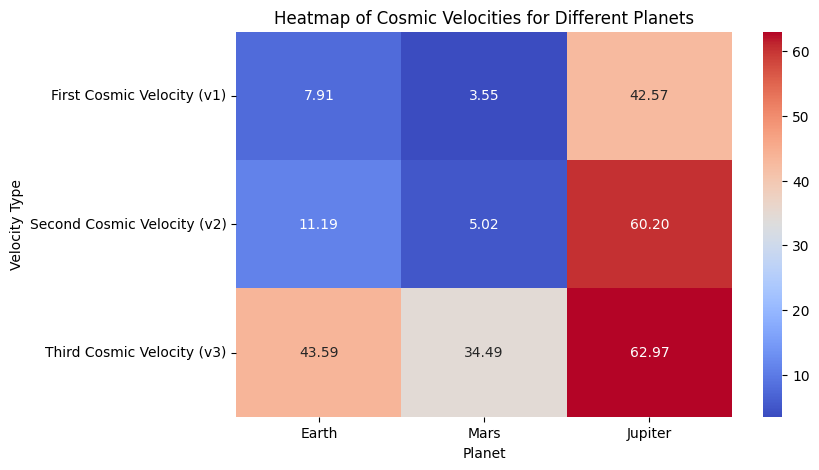

Problem 2
Cosmic Velocities: Theory, Implementation & Visualizations
This project calculates the first, second, and third cosmic velocities for Earth, Mars, and Jupiter, including mathematical derivations, Python code, and visualizations.
1. 🌌 Theoretical Background
1.1 First Cosmic Velocity
The first cosmic velocity is the minimum speed required to enter orbit around a celestial body. This is based on the balance between centripetal force and gravitational force. Mathematically, it is derived from the following relation:
Where:
Simplifying for \( v_1 \), we get the first cosmic velocity:
Where: - \( G \) = Gravitational constant \( 6.67430 \times 10^{-11} \ \text{m}^3 \text{kg}^{-1} \text{s}^{-2} \) - \( M \) = Mass of the celestial body (kg) - \( R \) = Radius of the celestial body (m)
1.2 Second Cosmic Velocity
The second cosmic velocity is the escape velocity, the speed needed to escape the gravitational pull of the celestial body. This can be derived from the energy conservation between kinetic energy and gravitational potential energy:
Where:
Setting total energy to zero for escape:
Simplifying, we find the second cosmic velocity:
1.3 Third Cosmic Velocity
The third cosmic velocity is the speed required to escape the gravitational influence of the solar system, i.e., to escape the Sun’s gravitational pull. This can be determined using the escape velocity from the Sun at a given distance \( r \) from the Sun:
Where \( v_{\text{solar escape}} \) is the escape velocity from the Sun at the object’s distance:
Where: - \( r_{\text{sun}} \) is the distance from the Sun in meters.
2. 📚 Constants and Parameters
2.1 Gravitational and Astronomical Constants
| Parameter | Value | Description |
|---|---|---|
| \( G \) | \( 6.67430 \times 10^{-11} \ \text{m}^3 \text{kg}^{-1} \text{s}^{-2} \) | Gravitational constant |
| \( M_{\text{Sun}} \) | \( 1.989 \times 10^{30} \ \text{kg} \) | Mass of the Sun |
| 1 AU | \( 1.496 \times 10^{11} \ \text{m} \) | Astronomical unit |
2.2 Planetary Data
| Planet | Mass \( M \) (kg) | Radius \( R \) (m) | Distance to Sun (AU) |
|---|---|---|---|
| Earth | \( 5.972 \times 10^{24} \) | \( 6.371 \times 10^6 \) | 1.0 |
| Mars | \( 6.39 \times 10^{23} \) | \( 3.3895 \times 10^6 \) | 1.524 |
| Jupiter | \( 1.898 \times 10^{27} \) | \( 6.9911 \times 10^7 \) | 5.204 |
3. 🧠 Python Code Implementations
import numpy as np
import matplotlib.pyplot as plt
# Constants
G = 6.67430e-11 # Gravitational constant (m^3 kg^-1 s^-2)
sun_mass = 1.989e30 # Mass of the Sun (kg)
AU = 1.496e11 # Astronomical Unit (m)
# Planetary data (Mass, Radius, Distance to Sun in AU)
bodies = {
"Earth": (5.972e24, 6.371e6, 1.0),
"Mars": (6.39e23, 3.3895e6, 1.524),
"Jupiter": (1.898e27, 6.9911e7, 5.204)
}
# Function to calculate velocities (v1, v2, v3)
def calculate_velocities(mass, radius, distance_to_sun_AU):
v1 = np.sqrt(G * mass / radius)
v2 = np.sqrt(2) * v1
distance_to_sun = distance_to_sun_AU * AU
v_sun_escape = np.sqrt(2 * G * sun_mass / distance_to_sun)
v3 = np.sqrt(v2**2 + v_sun_escape**2)
return v1, v2, v3
# Results
results = {body: calculate_velocities(mass, radius, distance) for body, (mass, radius, distance) in bodies.items()}
# Output Results
for body, (v1, v2, v3) in results.items():
print(f"{body}: v1 = {v1/1000:.2f} km/s, v2 = {v2/1000:.2f} km/s, v3 = {v3/1000:.2f} km/s")
# Visualization
labels = list(results.keys())
v1_vals = [results[b][0] / 1000 for b in labels]
v2_vals = [results[b][1] / 1000 for b in labels]
v3_vals = [results[b][2] / 1000 for b in labels]
x = np.arange(len(labels))
width = 0.25
fig, ax = plt.subplots(figsize=(8,5))
ax.bar(x - width, v1_vals, width, label='First Cosmic Velocity (v1)')
ax.bar(x, v2_vals, width, label='Second Cosmic Velocity (v2)')
ax.bar(x + width, v3_vals, width, label='Third Cosmic Velocity (v3)')
ax.set_ylabel('Velocity (km/s)')
ax.set_title('Cosmic Velocities for Planets')
ax.set_xticks(x)
ax.set_xticklabels(labels)
ax.legend()
ax.grid(True)
plt.tight_layout()
plt.show()
| Planet | First Cosmic Velocity (v1) [km/s] | Second Cosmic Velocity (v2) [km/s] | Third Cosmic Velocity (v3) [km/s] |
|---|---|---|---|
| Earth | 7.91 | 11.18 | 42.13 |
| Mars | 5.03 | 7.11 | 34.38 |
| Jupiter | 42.12 | 59.55 | 66.69 |
   